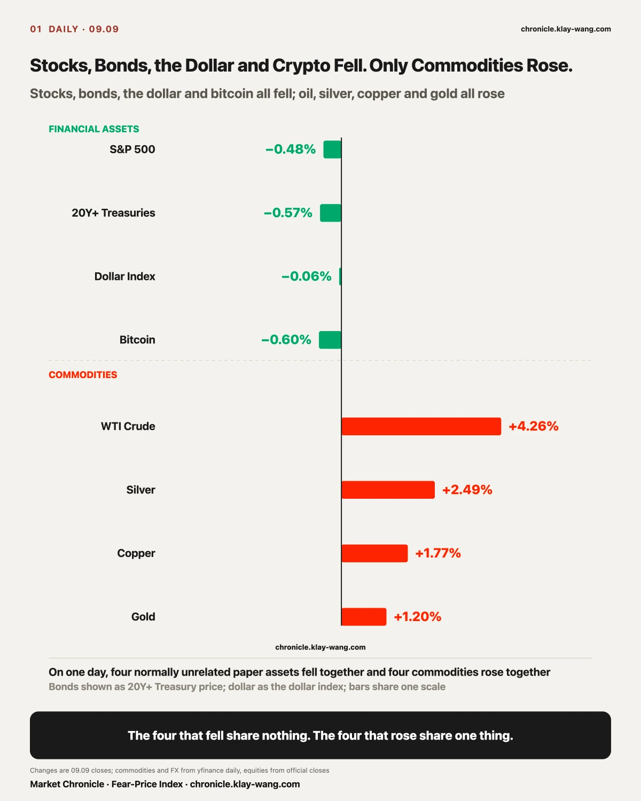
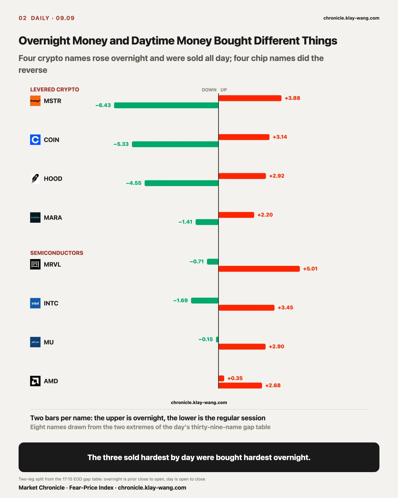
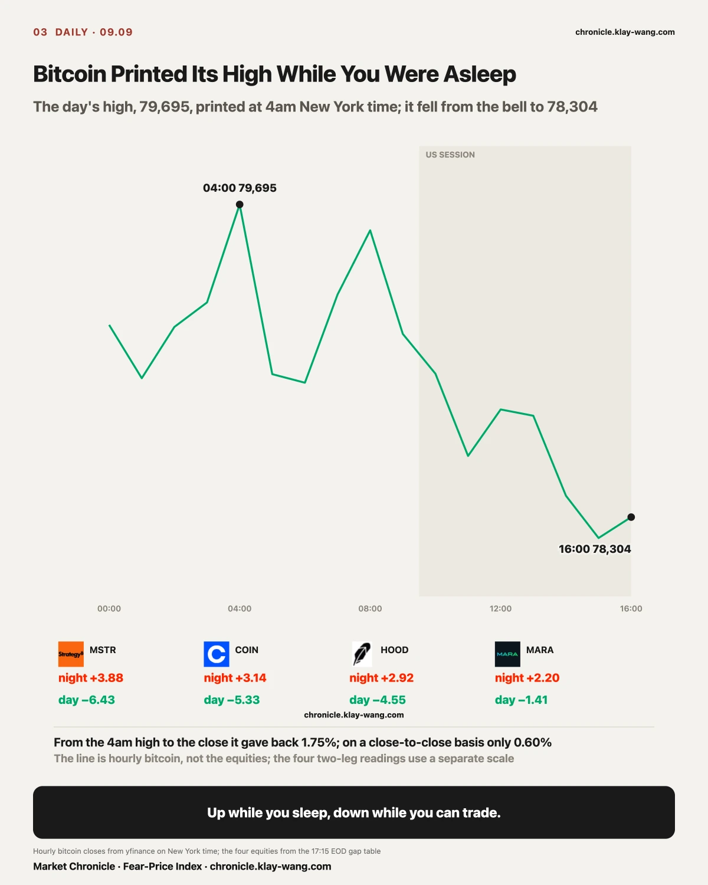
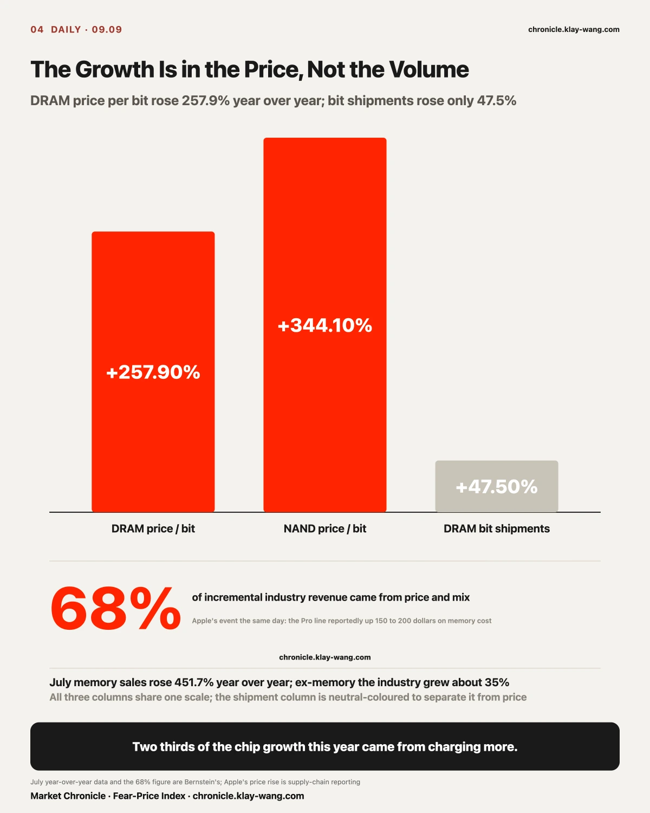
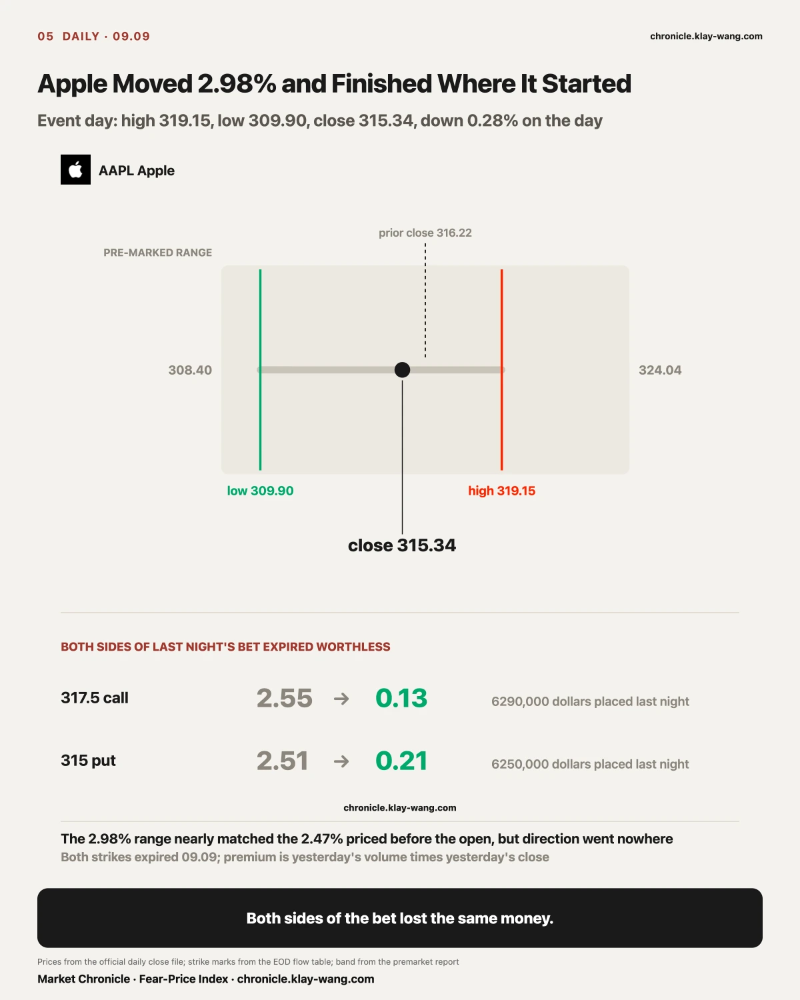
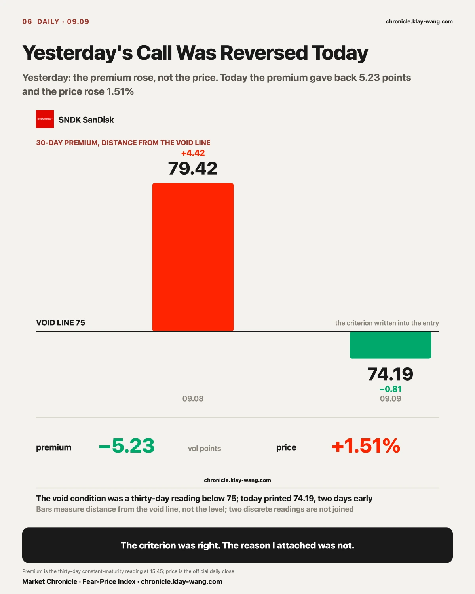
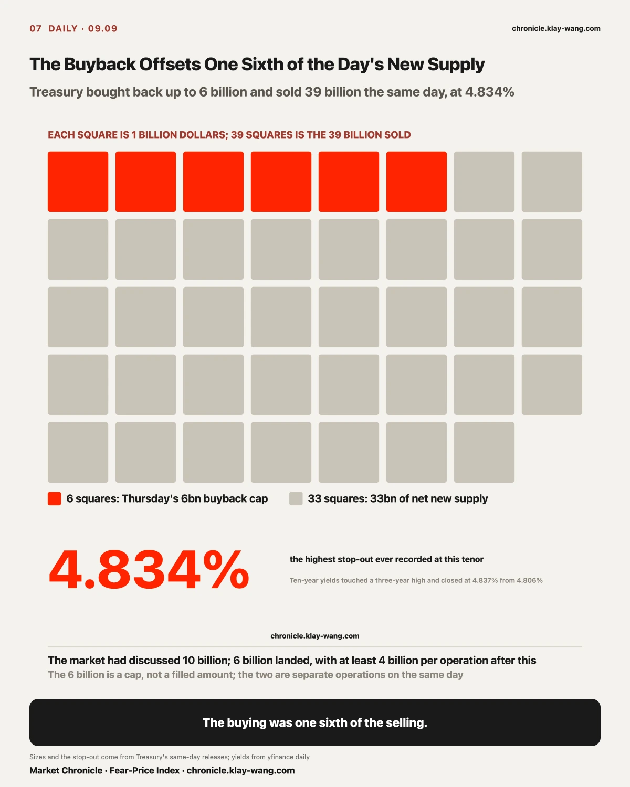
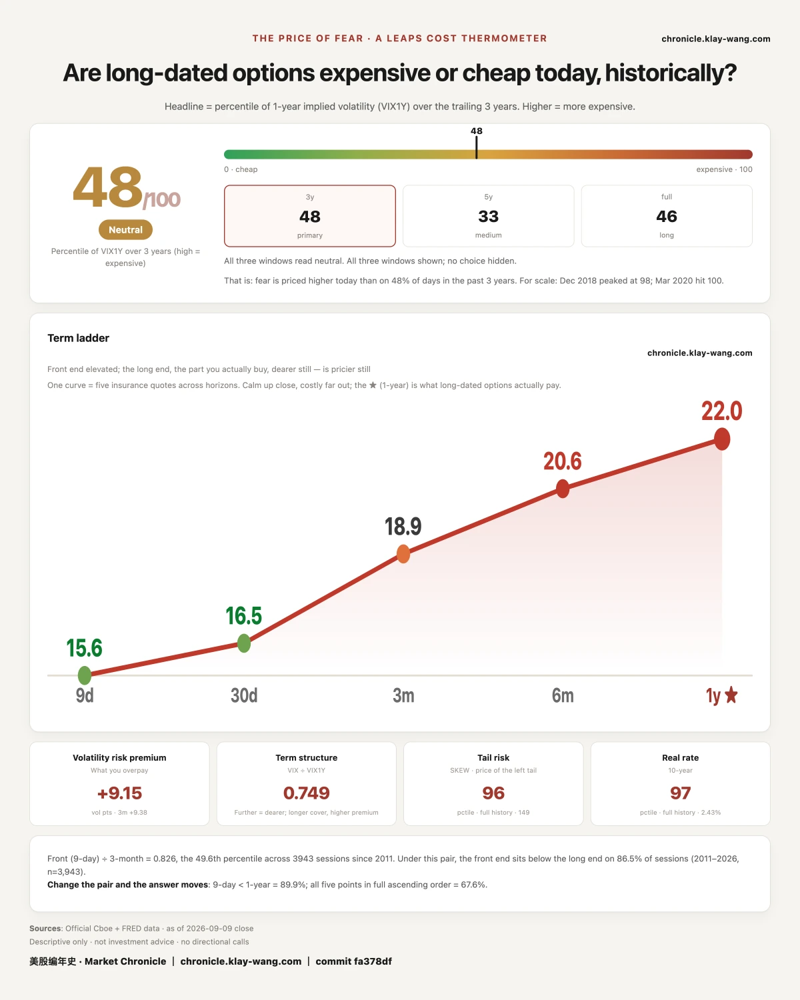

The gap table splits each name into an overnight leg and a daytime leg. Across thirty-nine names the shape is clean.
Top five overnight: Meta +5.73%, MicroStrategy +3.88%, Coinbase +3.14%, Robinhood +2.92%, Marathon +2.20%. Apart from Meta, which launched a product, all of them are levered crypto exposure.
Top five during the day: Marvell +5.01%, GameStop +4.14%, Intel +3.45%, Micron +2.90%, AMD +2.68%. Apart from GameStop, all semiconductors.
Worst five during the day: MicroStrategy −6.43%, Coinbase −5.33%, Robinhood −4.55%, IonQ −3.47%, SpaceX −2.95%.
The third list and the first list are the same names. The three that were lifted overnight gave back more during the day than they were lifted by.
Why those four is clearest in bitcoin's own path: the day's high of 79,695 printed at four in the morning New York time, it sold off from the opening bell and closed at 78,304. Bitcoin lost 0.60% on the day; MicroStrategy lost 6.43% in the regular session alone. Those overnight points were handed out while the US market was shut, and the market took them back as soon as it opened.

A Bernstein note on July semiconductor sales is headlined on memory rising in both price and volume. What it does is simple: split July's global semiconductor sales into price and quantity, then show which half is doing the work.
July global semiconductor sales rose 131.4% year over year. Memory alone rose 451.7%; strip memory out and the rest of the industry grew about 35%. Underneath: DRAM average selling price per bit rose 257.9%, NAND per bit rose 344.1%, while DRAM bit shipments rose only 47.5%.
Over the first seven months, memory contributed roughly 355 billion dollars of incremental industry revenue, of which price and mix accounted for about 306 billion, or 68% of all incremental industry revenue.
Two thirds of this year's semiconductor growth came from charging more, not from selling more.
The same day, Apple held its event. Supply-chain reporting puts the Pro line up 150 to 200 dollars, with memory and storage cost cited as the reason. Chips got more expensive upstream, phones got more expensive downstream, about a year apart.

We wrote this down last night: in Apple's contracts expiring today, the 317.5 calls carried 6.29 million dollars and the 315 puts carried 6.25 million. Nearly identical on both sides. That kind of bet buys movement, not direction.
It moved. High 319.15, low 309.90, a 2.98% range, close to the 2.47% the options had priced before the open.
It closed at 315.34, down 0.28%.
The 317.5 calls went from 2.55 to 0.13. The 315 puts went from 2.51 to 0.21. Both sides expired worthless. The people betting it would rise and the people betting it would fall lost the same money.
That expiry traded 67.3 million dollars of premium across the full session, twice yesterday's total, with the three largest strikes all in-the-money calls traded intraday. The money on event day went in and out during the session. Nobody wanted to hold it overnight.

Yesterday we measured the engine: rank twenty-one names by their 08.07 to 08.28 return, then track winners minus losers. The spread was 12.18 points during the build, narrowed to 2.25 last week, and turned to 1.66 behind this week. We also wrote that momentum factors rarely restart within a month of rolling over.
Today the question changes: can that engine restart. It takes five dimensions to answer, and dropping any one of them skews the answer.
Seasonality. Momentum money has historically firmed after mid-September. That is not a promise history repeats; it is a statement about the window.
Style. The momentum-versus-S&P ratio, after July's clear drawdown, has started to tick up. That matters more than a rebound in single names. Semiconductors rallying alone is sector repair; the factor beating the index means the market is rotating back toward buying strength.
Price structure. Micron, SanDisk, a memory ETF and the Korea ETF broke out of converging triangles at the same time. One name breaking out is a single-stock event; four related directions doing it together means the money is buying a line, not a point.
Risk pricing. A semiconductor volatility gauge fell from roughly 65 in July to 36, close to where it started the year. The market had been afraid of another collapse and would not chase; with volatility down and prices breaking out, both the cost and the discomfort of re-entering fall.
Positioning, and this one matters most. Hedge-fund gross exposure fell off a cliff in August as fast money cut risk ahead of an uncertain September. Lately it has begun to tick back up. The round of de-risking is done; if macro pressure does not worsen, there is room to add back.
All five point the same way: AI hardware and semiconductors may be turning back up. That is not the same as saying momentum has fully restarted, with CPI and the Fed still ahead this month. Three things to follow daily from here. Today is day one.
The momentum factor did not beat the S&P today: the spread went from 1.66 behind to 2.60 behind, another 0.87 lost on the session.
Semiconductors did stay stronger than software: the semis ETF closed +0.10% against software at −0.81%, a 0.91-point gap.
The memory chain held its breakout: Micron +2.75%, SanDisk +1.51%, Western Digital +1.73%, SK Hynix's US ADR +7.05%, the Korea ETF +0.46%. None gave it back.
The one that did not come through is the first, and it opens up. The laggard group rose 0.74% today. Strip out Meta alone and the group is −0.23%, and the spread goes from −0.87 to +0.10. Nearly all of today's deterioration is one name, and that name rose on a product it launched itself, which has nothing to do with semiconductors.
The sector is already moving underneath. The factor above it has not turned. What stood in the way today was not weakness in semiconductors but one company stock up 6.55% sitting inside the laggard basket.
Over the next three sessions, if Meta stops dominating the laggard group on its own and the spread still does not narrow, this reading does not hold.

Yesterday we wrote that what rose at SanDisk was the premium, not the price. The stock was down 0.12% while thirty-day constant-maturity volatility went from 73.05 to 79.42. The falsification condition written into that entry: if the thirty-day reading falls back below 75 before September 11, the call is void.
Today it printed 74.19. Void, two days early.
Worse than void is the direction. The premium gave back 5.23 points and the stock rose 1.51%. Completely reversed.
The error is easy to locate: a one-off repricing after a three-day weekend was read as a repricing of the road ahead. Sellers of insurance take back three days of time value when the market reopens. That is the calendar, not a judgment. The criterion was right, the reading was right. What was wrong was the reason attached to the reading.

Apple's call stands, above. Intel answered only half of it. It closed 106.24 and held 100. The other half turns on whether open interest in the September 18 100 calls fell, and that number cannot be read yet: the two data sources sit one settlement cycle apart, so today's reading is still yesterday's. What is visible is volume collapsing: those 100 calls traded 2,520 contracts today against 18,047 yesterday, and the money moved to the 110 strike, 26,264 contracts and 7.41 million dollars. Volume says that strike is no longer the battleground. Whether the position actually shrank shows up tomorrow morning.
Tesla's September 9 360 puts expired worthless with the stock at 367.81. Friday's 26,469 contracts and 25.28 million dollars are gone.
The five-point term structure call is retained: the one-year at 21.97 sits above 21.70, and the reading becomes both ends rising.
The Treasury buyback: three readings all said the bond market did not move, and the bond market moved. Eleven o'clock brought a maximum of 6 billion dollars for Thursday against a number the market had been discussing of 10 billion. TLT closed 81.73, inside the 81.54 to 82.86 band marked before the open, and MOVE moved only from 76.14 to 76.74. Three readings, one message: no repricing.
The side those readings did not look at is the side where it happened. That afternoon Treasury auctioned 39 billion dollars of ten-year notes at 4.834%, the highest stop-out ever recorded at that tenor, and ten-year yields touched a three-year high before closing at 4.837% against 4.806% the day before.
Laid out by maturity the shape is clear. The front end barely moved: the 1-3 year Treasury ETF lost 0.02%. The belly fell: 7-10 year down 0.36%. The long end fell a little more: 20-year-plus down 0.57%. Yields agree: five-year up 4.1 basis points, ten-year up 3.1, thirty-year up only 2.2. What moved was the belly, not either end.
Of those three readings, TLT watches only the long end and MOVE only answers whether volatility is expensive. What actually got repriced today was the ten-year note, and neither one reaches it.
The insurance side stayed quiet too: MOVE moved 0.60. Rate volatility did not get more expensive. Today's move in bonds was a supply problem, not a risk problem.
The criterion was not wrong, it was narrow: it fixed on the long end and on volatility, and missed the note that actually got repriced. Same family as the earlier miss: one was pinned to a moment, this one to an instrument. A criterion settles only where it was pinned, and says nothing about anywhere else.
One footnote worth keeping. At 11:14 in the morning TLT printed 81.51, already outside the band. Written from that moment, today's judgment would have been the opposite of the one printed here. The criterion was fixed on the official close, not on any moment inside the session.

Yesterday Alphabet's November 20 370 calls and 440 calls each traded about 28,000 contracts. Settlement open interest today: the 370 strike added 27,509 contracts, the 440 strike added 27,507. Volume differed by 588 contracts; net positions differ by two.
Equal size is a structural requirement of a spread. Two independent bets do not land on that number. This is a bull call spread, long the 370, short the 440.
Net outlay is about 25.38 million dollars, 8.96 per share, breakeven 378.96. Alphabet closed 330.65 today. It needs 14.8% to break even by November 20 and 33.2% to collect the maximum.
Selling the 440 leg is admitting you do not think it gets up thirty percent. This is a bet on a rise with the ceiling nailed shut by the buyer. The day after it was placed, Alphabet fell 2.28%, the weakest of the megacaps, and closed below the lower edge of its own pre-marked expected range.

Fear-Price Index · 2026-09-09 · reading 47.6/100: one-year volatility VIX1Y is 21.97, the 47.6th percentile of the past three years, where high means expensive. Daily ledger and methodology at chronicle.klay-wang.com · Attribution: Fear-Price Index · Market Chronicle
One-year volatility printed 21.97 today and the three-year percentile went from 43.0 to 47.6. Across the ladder since September 4: nine-day 11.97 to 15.59, thirty-day 15.30 to 16.46, three-month 17.61 to 18.87, six-month 19.89 to 20.63, one-year 21.49 to 21.97.
All five rose, and the near end rose far more. Nine-day added 3.62; one-year added 0.48. The VIX to one-year ratio moved from 0.722 to 0.749. Oil said the same thing today: Brent rose 4.16% back above 100, and its tight-near, looser-far shape points the same way as this ladder.
The September 4 entry said the thing being repriced was a year out. Today it is retained and rewritten: both ends are rising, the near end faster.